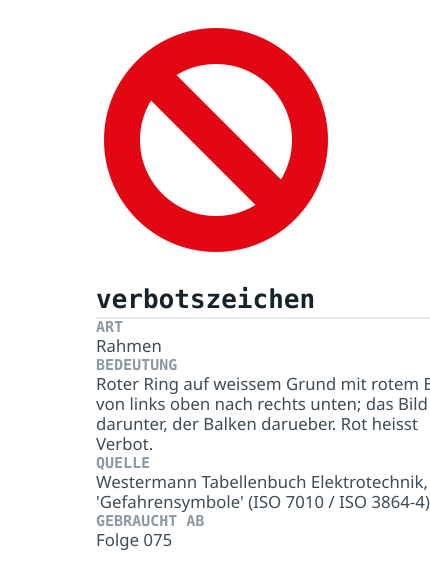
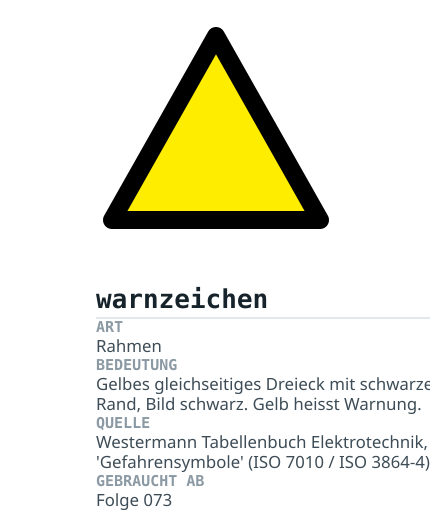
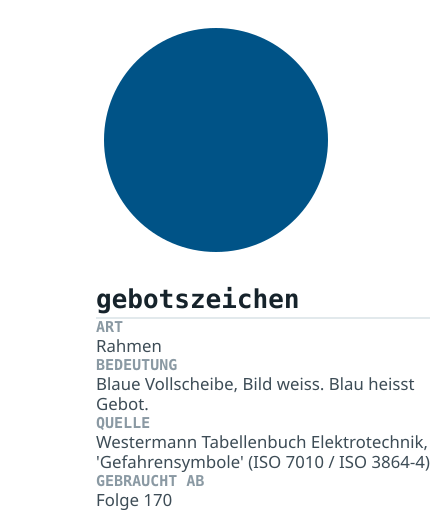
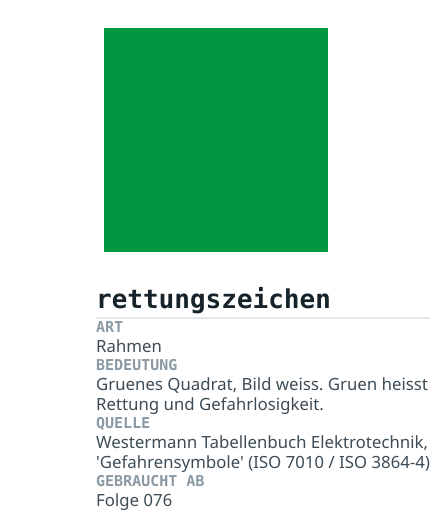

Eigene Datei etsig-neu.js, nicht Teil von etsym.js: diese Zeichen haben
keine Anschlüsse, leben von Flächen und ihre Farbe ist Teil der Aussage. Sie werden nicht
gedreht und nicht umgefärbt.
Die vier ersten sind die Rahmen — sie nehmen über {bild:'…'} ein
Piktogramm auf. Die bildhaften Piktogramme sind bewusst nicht gezeichnet, Begründung in
BERICHT.md, Abschnitt 4.5.



